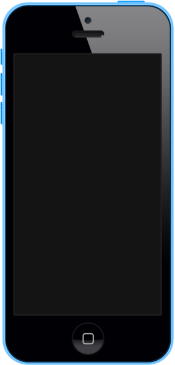
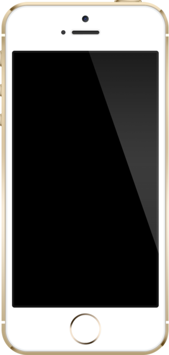

| главная |
iphone 3g/3gs |
iphone 4/4s |
iphone 5 |
iphone 5c/5s |
iPhone 6/6+ |
iPhone 6S/6S+ |
iPhone SE |
iPhone 7/7+ |
iPhone 8 |
iPhone X |
iPhone XS |
iPhone 5с
iPhone 5c — сенсорный смартфон корпорации Apple, является преемником iPhone 5. Выполнен в пяти цветовых решениях. Работает на операционной системе iOS 7, содержит процессор Apple A6, и в целом близок по аппаратным возможностям к iPhone 5. Корпус телефона сделан из поликарбоната, в отличие от более дорогого iPhone 5s, представленного в тот же день, 10 сентября 2013 года, оформленного при помощи алюминия и стекла. Корпус iPhone 5c выполнен из поликарбоната и доступен в пяти цветах: белом, голубом, розовым, жёлтом и зелёном. Передняя панель изготовлена в чёрном цвете.
Продажи в США и ещё восьми странах, включая Китай стартовали 20 сентября. 25 октября продажа начнется в странах «второй волны», куда вошла и Россия. До декабря начнутся продажи ещё в 120 странах.По сообщениям компании, с 20 по 22 сентября 2013 года было продано 9 млн устройств, что является рекордом для Apple за всю историю продаж смартфонов. Стоимость телефона без контракта в зависимости от объема флеш-памяти: в США — 549—649 долларов, в Европе — 599—699 евро. По информации ритейлеров, телефон в России будет стоит от 24990 до 29900 рублей, в зависимости от объема памяти устройства (16 и 32 Гб).
iPhone 5s
iPhone 5s — смартфон корпорации Apple, представляет седьмое поколение iPhone и является преемником iPhone 5. Работает на операционной системе iOS 7 (64-битная версия), содержит процессор Apple A7 (ARMv8), со-процессор Apple M7 и сканер отпечатков пальцев (Touch ID), встроенный в крупную кнопку чуть ниже экрана. Выполнен в трех цветовых решениях (космическо-серый, серебристый и золотистый), в отличие от iPhone 5 (черный и белый) и iPhone 5C (пять цветных вариантов, но поликарбонатный корпус). Был представлен 10 сентября 2013 года, одновременно с iPhone 5C.Корпус из алюминия и стекла. Задняя панель iPhone 5S сделана из анодированного алюминия, материала ранее использованного для изготовления корпусов ноутбуков Apple. Внутренние слои в верхней и нижней части задней панели изготовлены из стеклокерамики (на моделях с золотым и серебристым корпусом) или цветного стекла (на модели цвета Space Gray).
Продажи в США и еще восьми странах, включая Китай, стартовали 20 сентября. В России и других странах «второй волны» продажа началась 25 октября. 1 ноября началась продажа устройств в странах третьей волны. Стоимость устройства в России 29 990 рублей за версию с 16GB, 34 990 — 32GB, 39 990 — 64GB.Стоимость телефона без контракта в зависимости от объема флеш-памяти: в США — 649—849 долларов, в Европе — 699—899 евро.Анонсированная официальная стоимость iPhone в России — от 29990 до 39990 рублей, в зависимости от объема памяти устройства (16, 32, 64 ГБ). За первый месяц интернет-продаж в России смартфон потерял более 40 % первоначальной стоимости.